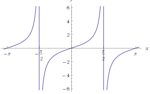

y=a
y=a
y=1/x
y=x^2
n is even
y=x^n
y=x^3
n is odd
y=[x]

y=√x
y=|x|
y=a^x
| Name of Function | Function | Graph |
| Constant |
f(x)=a y=a |
|
| Identity |
f(x)=a y=a |
|
| Reciprocal |
f(x)=1/x y=1/x |
|
| Quadratic |
f(x)=x^2 y=x^2 n is even |
|
| Power (Even or Odd) |
f(x)=x^n y=x^n |
n is even or odd |
| Cubic |
f(x)=x^3 y=x^3 n is odd |
Greatest Integer |
f(x)=[x] y=[x] |
|
Square Root |
f(x)=√x y=√x |
Absolute Value |
f(x)=|x| y=|x| |
Exponential |
f(x)=a^x y=a^x |
Logarithm |
y=logax, y=in x |
Trigonometric |
y=sin(x), y=cos(x), y=tan(x) |
 |